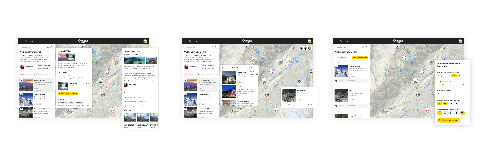
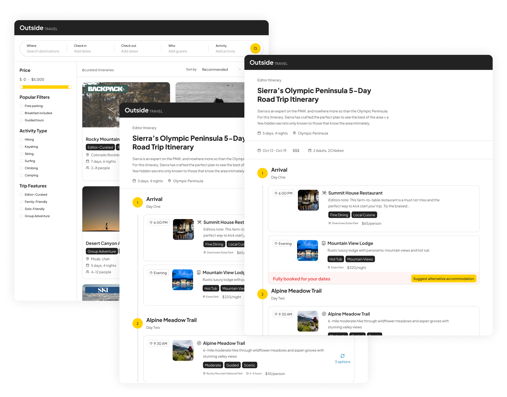
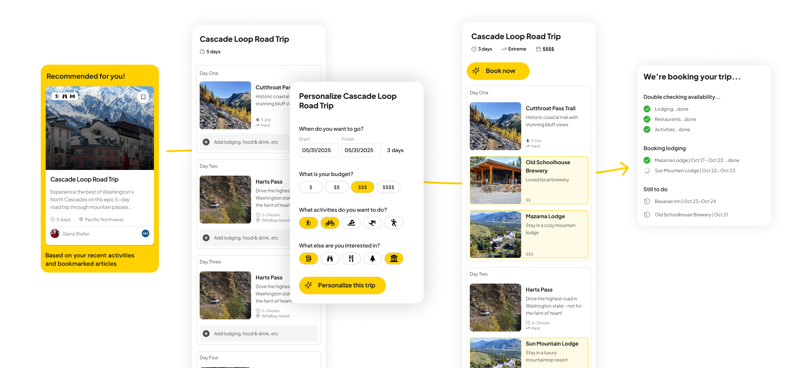

Pioneering an AI-assisted product discovery process to rapidly align executive leadership, launch Outside's first travel platform, and identify a net-new travel experience.
Overview
Defining a net-new travel product for Outside and accelerating time-to-market by pioneering an AI-assisted, design-led discovery process.
Context
Following the acquisition of Inntopia (a SaaS booking and inventory platform), Outside wanted to immediately unlock value from the platform while simultaneously exploring a longer-term travel product. Running in parallel was an executive mandate to explore how AI could accelerate both the end-user product experience and our internal development cycles. As Co-Project and Design Lead, I partnered with a PM to turn these broad ambitions into a concrete roadmap.
Opportunity
Design a strategic, cross-functional initiative to:
- Put Inntopia’s backend inventory to work as quickly as possible
- Define a long-term, human-centric travel product aligned with Outside’s brand and audience
- Pioneer AI-integrated workflows to radically reduce discovery time and design-to-engineering handoff friction
Challenge
The core tension sat between speed, brand integrity, and organizational ambiguity:
- Inntopia’s out-of-the-box front-end experience was insufficient for direct use by Outside’s audience
- While countless long-term travel ideas existed, there was zero alignment among executive leadership on which vector to pursue
- PWe needed to balance the mandate for AI automation with Outside’s core brand value: human-created, highly curated content
Approach
I structured and facilitated a series of cross-functional workshops with product, engineering, and business leadership to force alignment and establish a shared baseline:
- Evaluated Inntopia's technical constraints and gained consensus to leverage its backend while completely reimagining the front-end experience
- Filtered long-term concepts through the lens of user value and brand differentiation, ultimately converging on an AI-assisted travel itinerary model
- Developed a product vision that firmly positioned AI as an assistant—augmenting human expertise and curation rather than replacing it
Execution
To meet the aggressive timeline, I fundamentally bypassed the standard design process to prioritize high-leverage execution:
- Instead of producing traditional, high-fidelity mockups for the near-term launch, I embedded engineers directly into discovery sessions and defined strict guiding principles and interaction constraints.
- Engineers built immediately from these principles, establishing a fluid, high-velocity design-engineering feedback loop that eliminated traditional handoff friction
- I utilized AI tools to rapidly synthesize complex workshop outputs and generate a structured PRD. This leverage allowed me to build a working prototype within hours of our final session to validate the direction with stakeholders

Outcome
I presented this strategic vision and prototype directly to the CEO and executive leadership, successfully securing approval, funding, and a dedicated team to carry the work forward.
- Launched an OTA: Successfully delivered Outside’s first travel OTA to market.
- Secured Future Investment: Aligned leadership around a validated, net-new product opportunity in the travel sector.
- Optimized Organizational Process: Successfully proved out a new, highly efficient AI-assisted discovery and delivery model that the broader organization could adopt.
